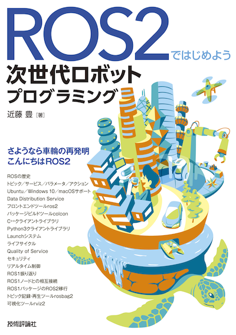

書籍「ROS2ではじめよう 次世代ロボットプログラミング」オンラインリソース
目次

ROS2ではじめよう 次世代ロボットプログラミング
内容紹介
Robot Operation System (ROS) の次世代バージョンであるROS2はロボットアプリケーション開発のためのミドルウェアです。ROS2は、ROS1で得られた経験をもとにほぼ再実装されたため、ROS1と直接的には互換性がありません。ROS1は通信内容が暗号化されておらず認証機能もありませんので、セキュリティ面で見ると商用ロボットの開発には不向きでした。ROS2ではセキュリティ、メンテナンス性、ライセンス、商業サポートなどのさまざまな観点から見直され、開発当初から製品への組み込みを目標にして再設計されています。
本書は今後のロボットアプリケーション開発のデファクトスタンダードになるROS2の入門書です。基本操作から、ROS1の資産を活用するための接続方法、パッケージの開発方法までを網羅します。本書のサンプルコードはC++ですが、それ以外のプログラミング言語を用いたクライアントライブラリについても解説します。ROS1ではUbuntuのみで利用できましたが、ROS2からはWindows、macOSで利用できるようになり、さらに利用者が増えると見込まれています。主なOSの開発環境のセットアップについても解説します。これからロボット開発をはじめたいと考える方だけでなく、ROS1ユーザにとっても有用な1冊です。
著者
近藤豊 (こんどうゆたか、@youtalk)
株式会社Preferred Networks エンジニア。ROS Japan Users Group を主宰。奈良先端科学技術大学院大学 情報科学研究科 博士後期課程 修了 博士 (工学)。
本書の構成
誌面より抜粋
はじめに
ROSの概要を紹介します。
- ROSとは何か
- ROS2はなぜできたか
- なぜ本書を書いたか
- 本書の構成
- 本書の読者
- 前提知識
- オンラインリソース
1章 ROS1ツアー
ROS1を知らない方、使ったことがない方に向けて、ROS1の備える機能を駆け足で紹介します。ROS1をすでに使ったことがある方は読み飛ばしていただいても結構です。
- 1-1 ROSの歴史
- 1-2 ROS1の開発環境セットアップ
- 1-3 Hello world!
- 1-4 センシング
- 1-5 Gazeboシミュレーション
- 1-6 ナビゲーション
- 1-7 マニピュレーション
- 1-8 ROS1のない世界
2章 ROS2の開発環境セットアップ
ROS2の開発環境をセットアップします。OSには一番セットアップが簡単なUbuntu 18.04を採用して進めますが、ROS2はWindows 10にもmacOSにも対応しています。その他のOSへのインストールは付録をご覧ください。
- 2-1 Ubuntu 18.04のインストール
- 2-2 ROS1のセットアップ無効化
- 2-3 ROS2のインストール
- 2-4 サンプルコードのセットアップ
3章 ROS2の基本機能
まず、ROS1とROS2との比較を行い、なぜROS2が必要になったかを理解します。その後、ROS2が備える改善されたメッセージ通信機能を一通り紹介します。また、そのメッセージ通信を支える技術であるDDS (Data Distribution Service) 、ROS2のコマンドラインインタフェースやビルドツールについても紹介します。
- 3-1 ROS1とROS2の違い
- 3-2 ROS1との内部アーキテクチャ比較
- 3-3 Data Distribution Service(DDS)
- 3-4 ROS2フロントエンドツールros2
- 3-5 ROS1/2パッケージビルドツールcolcon
- 3-6 トピック
- 3-7 サービス
- 3-8 パラメータ
4章 ROS2の応用機能
ROS2で新たに機能追加、改善された機能を紹介します。これらの概念を理解し使いこなせるようになれば、ROS2を習得したといっても良いのではないでしょうか。
- 4-1 Launchシステム
- 4-2 アクション
- 4-3 ライフサイクル
- 4-4 Quality of Service (QoS)
- 4-5 DDSベンダ実装の変更
- 4-6 セキュリティ
- 4-7 ROS1ノードとの相互接続
- 4-8 リアルタイム制御
5章 ROS2に対応したツール／パッケージ
ROS2は正式リリースから2年以上が経過したとはいえ、すべてのROS1パッケージがROS2に移行しているわけではありません。現在移行が進んでいるパッケージの中から特に大切なものを選んで紹介します。
- 5-1 進むROS2への対応
- 5-2 トピック記録・再生ツールrosbag2
- 5-3 可視化ツールrviz2
- 5-4 RealSenseドライバros2_intel_realsense
- 5-5 ナビゲーションパッケージnavigation2
- 5-6 動作計画パッケージmoveit2
- 5-7 Gazeboシミュレーション連携
6章 Roomba用ROS1ドライバのROS2移行
ROS1パッケージの開発経験者は、ROS2の基本機能、応用機能、既存パッケージの存在を学んだ後、次に自分のROS1パッケージをROS2に対応させたくなるはずです。本章ではiRobotのRoomba用ROS1ドライバをROS2に対応させる移行作業を通じて、実践的なROS2プログラミングを学びます。
- 6-1 RoombaとROSの歴史
- 6-2 シリアル通信ケーブルの入手
- 6-3 Roomba/Create のROS1ドライバcreate_autonomy
- 6-4 拙作ROS2版create_autonomy
- 6-5 package.xmlの更新
- 6-6 メッセージ、サービス、アクション定義の更新
- 6-7 ビルドシステムの変更
- 6-8 ソースコードの更新
- 6-9 まとめ
7章 Pythonクライアントライブラリrclpy
本書ではソースコード例のプログラミング言語にC++14を用いています。ROS2の公式クライアントライブラリとして最も盛んにメンテナンスされているのが、C++版のクライアントライブラリ rclcpp だからです。それ以外のプログラミング言語の中から、本章ではスクリプト言語Python3のクライアントライブラリ rclpy を取り上げ、プログラミング方法を説明します。
- 7-1 ROS2 のクライアントライブラリ
- 7-2 パッケージ構成
- 7-3 トピック実装
- 7-4 サービス実装
- 7-5 アクション実装
おわりに
本書に込めた熱い気持ちを最後にまとめました。本書を手にとって最後まで読み進んでいただいた読者の皆様と、本書を執筆するにあたってご協力いただいた様々な方々への感謝の言葉も綴っています。
- ROS2 Technical Steering Committee
- 事前アンケート
- 本を書くということ
- 謝辞
付録
本文で扱わなかったUbuntu 18.04以外のOSへのインストール手順や、サンプルコードのライセンス条項を記載します。また、3章、4章で紹介した内容よりも、さらに上級者向けのROS2プログラミング手法をご紹介します。
- A-1 コンポーネント指向ROS2ノードプログラミング
- A-2 Windows 10での開発環境セットアップ
- A-3 macOS Mojaveでの開発環境セットアップ
- A-4 サンプルコードのライセンス条項
正誤表
TBA
サンプルコードのセットアップ
1章 ROS1ツアー
誌面より
次項からステップバイステップで実装していくROS1デモパッケージ
hello_worldのソースコードはオンラインリソースhttps://github.com/youtalk/get-started-ros2/tree/release/ros1/hello_world
にビルド可能な形で全て保存されています。 本文では紙面の都合上、ライセンスやインクルード文などを省略し、ソースコードも一部のみを抜粋して記載しています。ソースコード全体をご覧になりたい場合には、こちらをご参照ください。 ライセンス条項に関しては、まとめて付録に記載しています。
サンプルコードのセットアップ方法は以下の通りです。適宜、本文と照らし合わせながら読み進めていってください。
$ cd ~/ && git clone https://github.com/youtalk/get-started-ros2.git $ cd get-started-ros2 && git submodule update --init $ mkdir ~/ros1 && cd ~/ros1 $ ln -s ~/get-started-ros2/ros1 src $ rosdep install --from-paths src --ignore-src -r -y $ catkin init $ catkin build $ catkin source
2章 ROS2の開発環境セットアップ
誌面より
次章からステップバイステップで実装していくROS2デモパッケージ
hello_worldおよび、4章、7章で使用するパッケージのソースコードはオンラインリソースhttps://github.com/youtalk/get-started-ros2/tree/release/ros2
以下にビルド可能な形で全て保存されています。 本文では紙面の都合上、ライセンスやインクルード文などを省略し、ソースコードも一部のみを抜粋して記載しています。ソースコード全体をご覧になりたい場合には、こちらをご参照ください。 ライセンス条項に関しては、まとめて付録に記載しています。
サンプルコードのセットアップ方法は以下の通りです。適宜、本文と照らし合わせながら読み進めていってください。
$ cd ~/ && git clone https://github.com/youtalk/get-started-ros2.git $ cd get-started-ros2 && git submodule update --init $ mkdir ~/ros2 && cd ~/ros2 $ ln -s ~/get-started-ros2/ros2 src $ rosdep install --from-paths src --ignore-src -r -y $ colcon build $ . ~/ros2/install/setup.bash